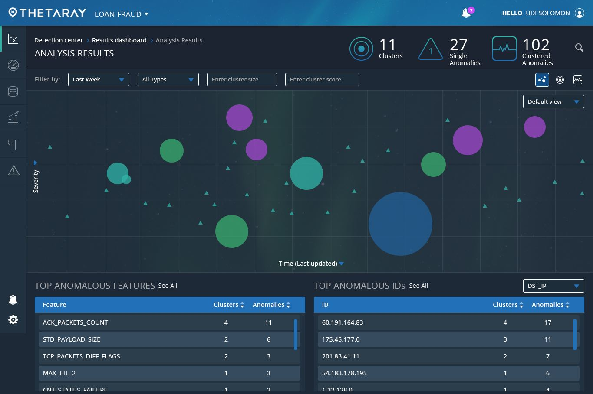
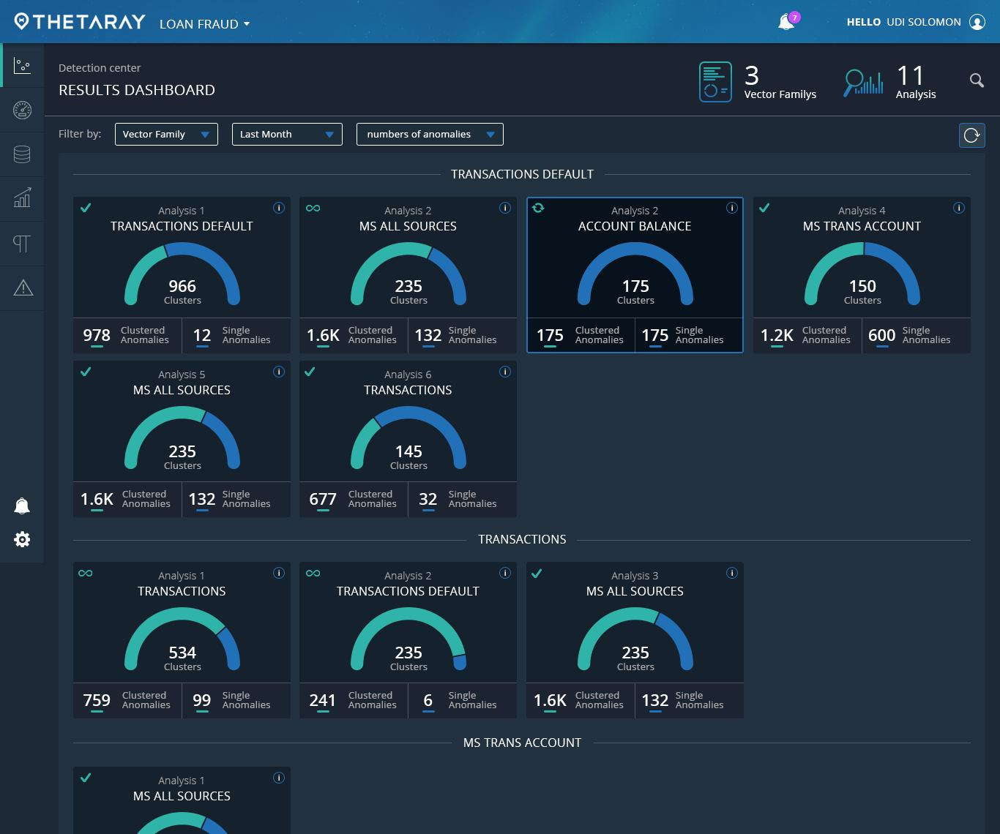
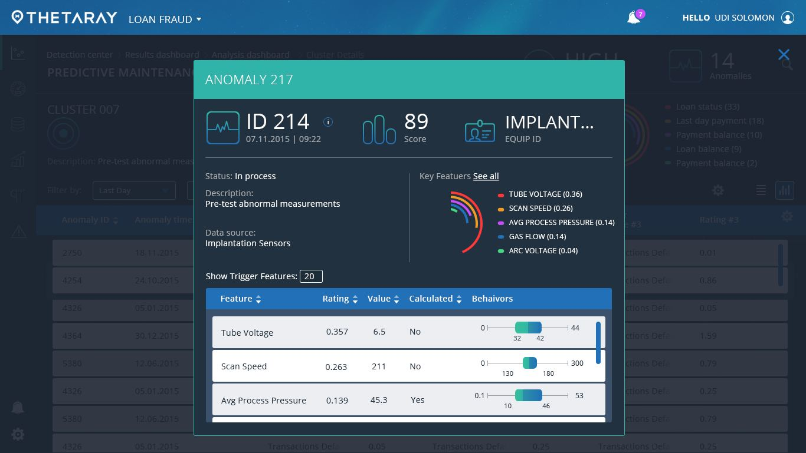
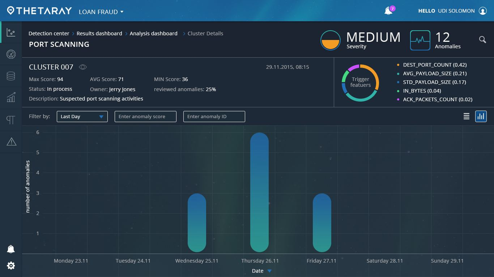
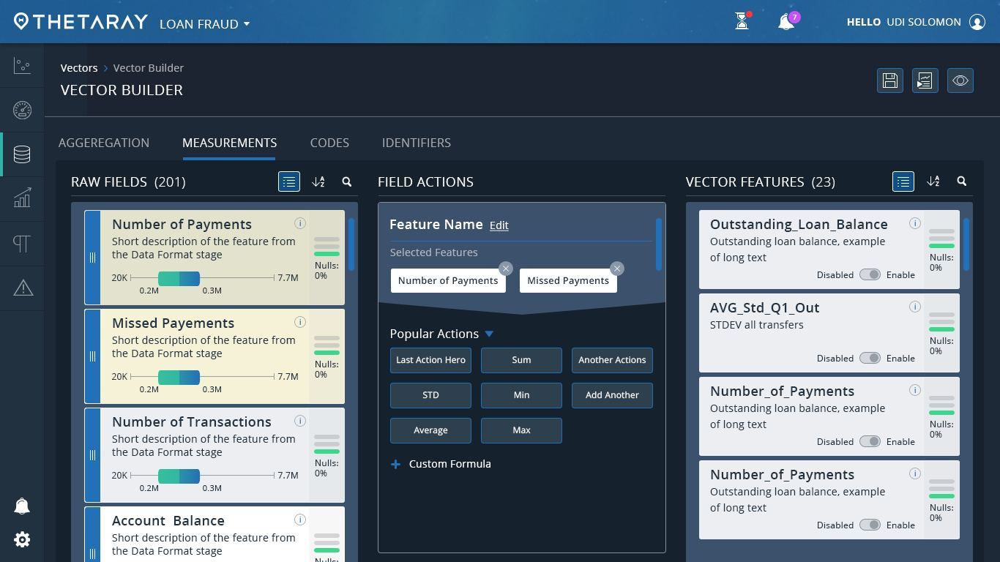

ThetaRay was an early-stage company with a machine-learning model for finding money laundering, and nothing else yet: no product, no brand, no pattern for showing what the model found. Through Uniq UI, I designed the platform end to end and built the brand alongside it. The designs were shown at an industry conference and helped ThetaRay secure funding.
ThetaRay's model could spot financial crime that rules missed. The problem was that nobody could see why.
The product managers thought in math, not in user needs. I became the translator: their models into screens an analyst could read, and analysts' needs back into requirements. Sketches went to the internal team, then quickly to early design partners at banks.

Instead of a long table of alerts, analysts see clusters on a map of severity over time. Bubble size is cluster size, so the unusual stands out at a glance.


Every cluster opens into its own story, and every anomaly breaks its score into the exact features that triggered it, each compared to its normal range. That screen is what answers the trust question.


The Vector Builder turns raw fields into detection features with simple actions like sum, average or a custom formula. Analysts could tune the logic themselves, with no code.

The designs were presented at an industry conference to excellent feedback and helped ThetaRay secure funding. The engagement also produced ThetaRay's first visual identity, built in parallel with the product.
Translating between a mathematical team and the people using their tool is design work, and often the most important part.
Let's talk about what you're building.